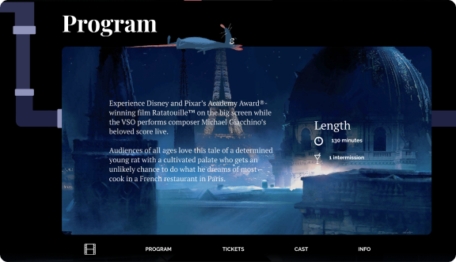
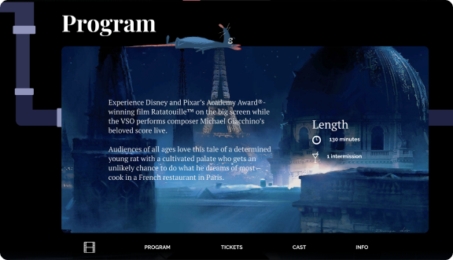
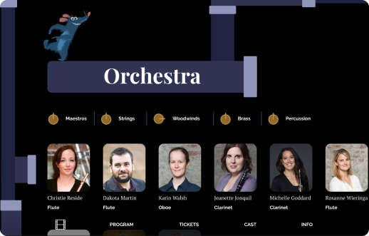
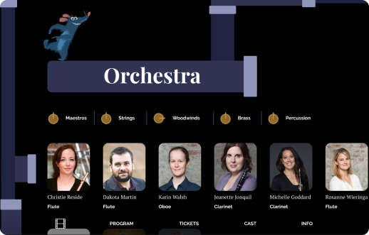

 


First, Simple Wireframe

Second, Ambitious Wireframe
I first created wireframes based on the movie Ratatouille’s art themes. I envisioned the site to feel like you’re exploring the environment of Ratatouille’s Paris through similar objects, colours, and music. I created two wireframes of varying themes and styles.
The first wireframe is simple. It has the same header decoration for each section, and was overall more structured. It also heavily focuses on iconography, such as the clock in “Tickets” to tell the time of the concert, the ticket button in the first section to purchase tickets, and the clock and pause icons in “Program” to give details of the concert length.
The second wireframe is less structured; there are pipes connecting each of the sections and the section headings are uniquely placed with the surrounding elements. This wireframe was expanded on and used for our final website because the pipes were playful and gave the site a unique factor.
We then developed the first and second mockups of the page. From the wireframe, we decided to include a section that allowed visitors to play the soundtrack of Ratatouille, so I designed the “Tracklist” section, which would later be called “Now Playing”.

Desktop Mockup

Mobile Mockup
The mockups below were the first mockups created for the site. Keeping with the colour palette, all the modules were cohesive and had a clear direction and role in the overall goal of the site. The first module was simple and invited users to continue scrolling down.

Desktop Mockup

Mobile Mockup
After receiving feedback, we reorganized how the tickets would be displayed. The tickets section was removed, and ticketing call to action buttons were added to the first section as well as the sticky navigation bar, what visitors would always see the option to buy tickets. We also adjusted the scale of the media player to take up less room and be faster to digest.
Orchestra Cast Section
After developing our final mockups, we began to code the website using HTML and CSS. I was assigned to code the Orchestra cast section. This section has dissolve tabs, clicking on each of the instrument groups reveals members of the orchestra that play that instrument.

Media Player Section
I also helped edit other sections, such as the media player’s phone layout and the font styles throughout the website.
This project taught me immensely how to design and develop a website from scratch. From creating wireframes out of vague ideas to teaching myself HTML and CSS, I grew my work ethic and research skills. I also developed a new interest in website design and development, which led to design and hand code this portoflio website from scratch.
This project was heavily team-based, I learned to properly communicated with my team regularly about what tasks I was doing, and also led some team meetings by reviewing what was done in the past week and what tasks my members would do next.